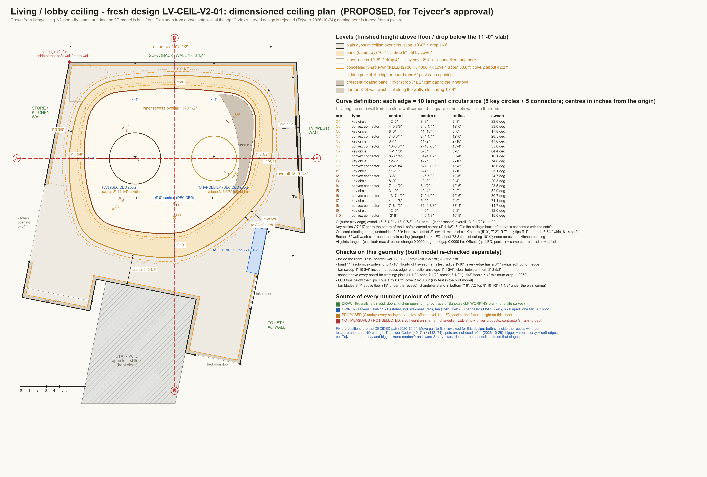
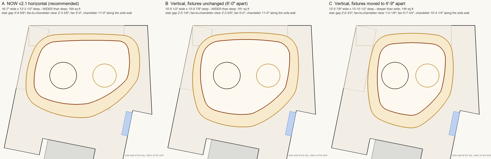
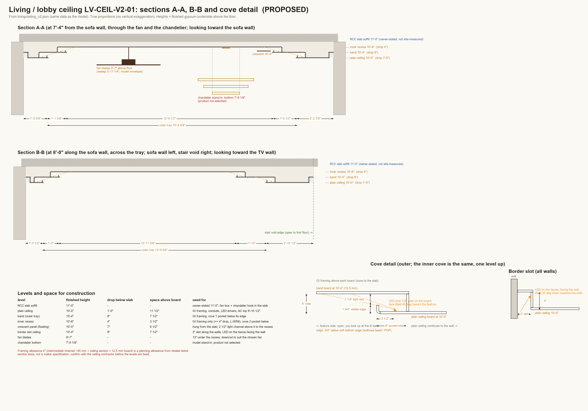

Your choices of 25 Oct: bigger and curvier (B, deeper toward the stairs), the reference's 2 ovals + crescent + lit border, soft rounded edges. Fan and chandelier unchanged. Drawings, 3D model and pictures all come from one set of arcs. Fast previews: the 4K renders follow only after you pass it.
The 3D previews of this version are rendering now. Refresh this page in about 15 minutes. The plan and sections below are final for this version.



| Outer oval (tray) | 15'-5 1/2" x 13'-9 7/8" overall, 181 sq ft; 10 tangent arcs; back-left curve concentric with the sofa's curved corner | proposed (your B) |
| Inner oval (recess) | 13'-0 1/2" x 11'-0" overall | proposed |
| Band between them | 11" on the sofa side to 1'-10" on the front-right sweep | proposed |
| Crescent | floating panel inside the inner oval on the TV side, 2" light gap, up to 1'-6 3/4" wide, underside 10'-5" | proposed (your choice) |
| Border | 3" lit wall-wash slot along the walls (not across the kitchen opening), about 78.3 ft of LED | proposed (your choice) |
| Edges | every visible edge has a 0 3/4" radius soft bottom edge | proposed |
| Slab soffit | 11'-0" above floor | owner (not site-measured) |
| Plain ceiling (circulation) | 10'-0" - drop 1'-0" | proposed |
| Band | 10'-4" - drop 8" | proposed |
| Recess | 10'-8" - drop 4" (4" framing + board minimum) | proposed |
| Coves | 2 x 4" steps, LED 3 1/2" behind the edge in a 6" pocket; about 51 ft + 42 ft of strip | proposed |
| Fan + chandelier | 5'-0" and 11'-0" along the sofa wall, both 7'-4" out, 6'-0" apart | owner (DECIDED, unchanged) |
| Fan blades / chandelier bottom | 9'-7" / 7'-9" (model stand-ins, products not chosen) | proposed |
| Distance to walls | nearest 1'-0 1/2"; stair void 2'-5 1/8"; AC 1'-1 1/8" | measured on the model |
| Camera / light | same camera, exposure and white balance (5500 K) for 2700 K and 4000 K; chandelier off | render setting |
Slab height 11'-0" is your figure, not a site measurement. Fan, chandelier, LED strip and driver products are not chosen: the fixtures in the pictures are model stand-ins. The 4" framing space is a planning allowance; the ceiling contractor should confirm it before the levels are fixed.